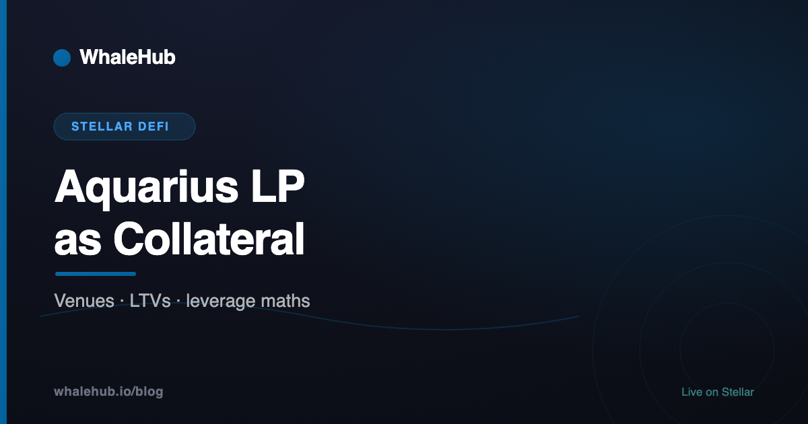

Borrowing Against Aquarius LP Tokens on Stellar: Venues and Leverage Maths

For most of Stellar's DeFi history, an Aquarius LP token did one thing: earn fees and rewards in the wallet that held it. Since August 2026 it can also be borrowed against, which makes leveraged liquidity provision possible on Stellar for the first time. This guide covers where you can do it, on what terms, and the maths to understand before looping a position.
XOXNO Lending lists Aquarius LPs as collateral at 50% LTV, 60% liquidation threshold, borrowing XLM, USDC, EURC or PYUSD. Looping at 50% LTV caps out at 2×, and at 2× a 44% XLM rally liquidates an XLM/USDC position with XLM debt. The useful range is well below the maximum.
Why LP collateral matters
An LP token is a claim on two assets in a pool plus the fees they earn. Using it as collateral lets a liquidity provider borrow against that claim and add more liquidity, turning a fixed position into a levered one.
On Ethereum and Solana this is a mature category: LP and yield-bearing tokens are routine collateral, and curated vaults run looped positions for users. On Stellar the pieces arrived separately. Aquarius issues transferable SEP-41 LP share tokens, and Soroban lending venues support flash loans. What was missing was a venue willing to list the LP tokens themselves.
Where you can borrow against an LP today
XOXNO Lending is the first venue on Stellar to list Aquarius LP tokens, in its mainnet configuration from August 2026. The LPs are collateral-only: you can deposit them, but nobody can borrow them. They sit in two isolated risk groups, "AMM Collateral" and "Aquarius Ecosystem":
| Aquarius LP | Max LTV | Liquidation threshold | Liquidation bonus | Supply cap |
|---|---|---|---|---|
| XLM/AQUA | 50% | 60% | 10% | 5,000,000 LP |
| AQUA/USDC | 50% | 60% | 10% | 5,000,000 LP |
| XLM/USDC | 50% | 60% | 10% | 500 LP |
| PYUSD/USDC, USDY/USDC, CETES/USDC, USTRY/USDC, XAUM/USDC, XLM/SolvBTC | 50% | 60% | 10% | 200–500 LP |
Against them you can borrow XLM, USDC, EURC or PYUSD, and XOXNO supports flash loans on those assets, which is what makes a one-transaction loop possible. Two caveats. First, the supply caps on most pairs are small, so capacity is limited today. Second, XOXNO's Stellar deployment is young and small, with roughly $74K of TVL on DefiLlama at the time of writing.
Blend V2 can list LP tokens too, because anyone can deploy a pool with any collateral. We are not aware of a major Blend pool listing Aquarius LPs as of this writing, and Blend paused its backstop after the August Comet exploit, so check its current status first.
How a leveraged LP position works
Take $1,000 in an XLM/USDC LP and a target of 1.5× exposure. Done by hand, you would deposit the LP, borrow XLM, swap half to USDC, add liquidity, deposit the new LP, and repeat. Each pass adds less, costs more fees, and leaves the position exposed between steps.
A flash loan does it in one transaction:
- Flash-borrow $500 of XLM.
- Swap half to USDC and add both to the pool, receiving about $500 of new LP.
- Deposit all $1,500 of LP as collateral.
- Borrow $500 of XLM against it and repay the flash loan.
You end with $1,500 of LP exposure and $500 of XLM debt, and the venue checks health once, at the end. This is the pattern XOXNO's "multiply" feature and WhaleHub's leverage vault (in testnet development) both use.
The maths: yield and liquidation
Yield. At leverage L, return on your equity is the LP yield on the whole position minus interest on the borrowed part:
net APY = LP APY × L − borrow APR × (L − 1)
With an LP earning 10.77% (the Aquarius XLM/USDC concentrated pool's unboosted rate in August) at 1.5×: borrowing at 0.10% nets 16.11%; at 5% it nets 13.66%; at 10.79% it nets 10.76%, the same as not levering at all. Leverage only pays while the borrow rate stays well under the LP yield, and borrow rates move with utilisation.
Liquidation. With XLM debt against an XLM/USDC LP, the risk is an XLM rally. In a constant-product pool the LP's value grows with the square root of the XLM price, while XLM debt grows one-for-one. With a 60% liquidation threshold, the health factor starts at 0.6 × L ÷ (L − 1) and falls with the square root of the price move:
| Leverage | Starting health factor | XLM rise that liquidates |
|---|---|---|
| 1.25× | 3.00 | +800% |
| 1.50× | 1.80 | +224% |
| 1.75× | 1.40 | +96% |
| 2.00× (max at 50% LTV) | 1.20 | +44% |
These figures ignore interest, fees and the extra impermanent loss of concentrated ranges, all of which bring liquidation closer. A falling XLM price makes this position safer, because the debt shrinks faster than the collateral. Borrowing USDC instead flips that: a falling XLM becomes the risk.
Questions to ask before looping
- Do rewards still reach you? Aquarius rewards accrue to the address holding the LP token. Once it is in a lending contract, whether you still receive them depends on the venue, and rewards are often a large share of LP yield.
- How is the LP priced? An LP priced from the pool's own spot price can be manipulated; one priced from the pool invariant and independent feeds is much harder to move. The YieldBlox exploit shows what happens when collateral pricing is weak.
- What is the borrow rate, and how fast can it change? Utilisation-driven rates can jump when others borrow the same asset.
- How deep is the exit? Unwinding sells through the same Aquarius pool. A large unwind in a shallow pool moves the price against you.
- Who watches the position? A self-managed loop has no one deleveraging it at 3am during a rally.
The takeaway
LP collateral is a genuine new primitive for Stellar, and the numbers make the trade clear: modest leverage, a borrow rate well below the LP yield, and a price move you can survive. The maximum leverage a venue allows is not the leverage worth using.
Sources: XOXNO rs-lending-xlm mainnet configuration (configs/mainnet/markets.json, spokes.json); DefiLlama; Aquarius pool data as of August 2026. Supply caps and parameters can change through XOXNO governance.
Frequently asked questions
Can you borrow against Aquarius LP tokens?
Yes. Since August 2026 XOXNO Lending on Stellar lists several Aquarius LP tokens as collateral, including XLM/USDC, XLM/AQUA and AQUA/USDC, at 50% loan-to-value. Blend V2 pools can also list an LP token as collateral if a pool operator chooses to.
How much leverage can you get on an Aquarius LP position?
At a 50% loan-to-value, looping an LP position reaches at most 2x in theory. At 2x there is almost no room before liquidation, so a practical range is 1.25–1.75x, where XLM would have to rise roughly 96–800% before a levered XLM/USDC position with XLM debt is liquidated, under the assumptions in this article.
Do you still earn Aquarius rewards on LP tokens used as collateral?
Aquarius rewards accrue to the address holding the LP token. When the token sits in a lending contract, whether the rewards reach you depends on that venue. Check before levering, because rewards are often a large share of an LP's yield.
What liquidates a levered XLM/USDC LP position?
If the debt is in XLM, an XLM rally. The LP's value grows roughly with the square root of the XLM price while the debt grows one-for-one with it, so a sharp rally closes the gap. A falling XLM price makes this position safer.
WhaleHub is a yield-optimization protocol on Stellar. We stake AQUA, aggregate ICE voting power, and auto-compound Aquarius rewards for stakers. This series explains the Stellar DeFi stack — and the wider market around it — in plain English.
Read more

Earn on Aquarius without managing a loop
WhaleHub's vaults auto-compound Aquarius LP positions every 4 hours. Stake AQUA or deposit into a vault in a few clicks.
Launch the appThis article is for education only and is not financial advice. Figures are taken from the sources linked in the text as of the date shown and change constantly. Verify them before acting. Leverage can lose more than the yield it adds; a levered position can be liquidated.